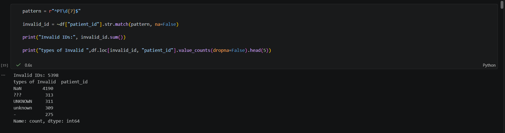
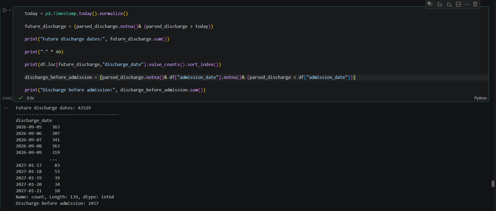
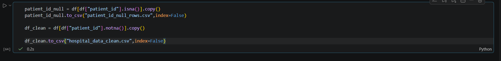

Hospital Data Cleaning & Data Quality Pipeline
A Python and Pandas data cleaning and data quality pipeline for approximately 1,000,000 hospital records. The project focuses on profiling, cleaning, standardizing, validating, quarantining critical invalid records, and producing a clean output dataset.
1. Project Overview
This project processes a dataset of approximately 1,000,000 records across 17 columns. The goal is to transform raw, inconsistent hospital operational data into a cleaner, more consistent, and validated dataset through a disciplined data quality lifecycle:
- Data profiling: Inspecting structural integrity, data types, missing values, and anomalies.
- Data cleaning: Correcting malformed text, handling placeholder representations, and normalizing values.
- Standardization: Enforcing consistent formats across clinical and administrative attributes.
- Data validation: Applying rule-based assertions to detect remaining discrepancies.
- Data quarantine: Isolating critical invalid records with missing identifiers into a separate audit file.
- Clean output generation: Exporting a validated, structured dataset ready for reliable analysis.
2. Data Quality Challenges
Initial evaluation revealed multiple real-world data quality problems across the raw records:
- Missing values: Gaps across critical clinical, contact, and administrative columns.
- Duplicate records: Redundant patient rows resulting from system syncs and application retries.
- Invalid patient IDs: Malformed prefixes, incorrect character lengths, and corrupted identifier strings.
- Placeholder values: Widespread use of pseudo-null strings such as
"UNKNOWN","unknown","???", and"-"rather than standardized null representations. - Invalid or out-of-range ages: Numeric anomalies including negative ages and values outside biological plausibility.
- Inconsistent categorical values: Variations in gender values, blood types, and department names.
- Invalid phone numbers: Mismatched character counts, non-numeric artifacts, and malformed area codes.
- Invalid email addresses: Missing domain names, syntax errors, and malformed strings.
- Inconsistent or invalid date values: Heterogeneous string date representations across columns.
- Future dates: Discharge dates recorded with timestamps ahead of the current calendar date.
- Discharge dates occurring before admission dates: Chronological order violations invalidating patient stay records.
3. Data Profiling
Initial profiling was conducted to understand the dataset structure and systematically uncover data-quality issues prior to applying transformations.
The profiling workflow assessed:
- Dataset structure: Column counts, row volumes, and memory footprint.
- Data types: Identifying fields stored as general strings (object) that required conversion to dates or numeric types.
- Missing values: Calculating explicit null counts across each of the 17 attributes.
- Duplicate records: Verifying duplicate frequencies across complete rows.
- Unique values & distributions: Assessing cardinality and identifying common invalid string patterns.
- Invalid formats: Scanning for disguised non-standard placeholder values.

4. Data Cleaning & Standardization
Based on profiling observations, targeted data cleaning and standardization transformations were performed across the dataset:
- Removing unnecessary whitespace: Stripping leading and trailing spaces across all string columns to prevent false mismatches.
- Standardizing text values: Converting casing consistently across categorical and naming fields.
- Cleaning names: Sanitizing patient and doctor names by removing non-alphabetic noise characters and trailing artifacts.
- Converting numeric fields: Parsing numeric metrics (such as bill amounts) into appropriate numeric types for computation.
- Standardizing categorical values: Harmonizing variations in gender, blood type, and department designations.
- Converting placeholder values: Replacing disguised placeholders such as
"UNKNOWN","unknown","???", and"-"with standard missing values (NaN) where appropriate so they are recognized by analytical workflows. - Validating and cleaning patient IDs: Checking conformity against expected hospital identifier formats and trimming stray prefixes.
- Cleaning phone numbers: Normalizing telephone strings and stripping non-numeric punctuation.
- Validating email addresses: Checking for valid email structures and flagging non-conforming entries.
- Parsing date fields: Converting admission and discharge strings into standardized date format.
- Identifying invalid or out-of-range values: Checking boundary conditions across age and billing attributes.
5. Data Validation
After cleaning routines were executed, explicit validation rules were applied to identify records that still violated expected business and data-quality rules.
Patient ID Validation
Patient IDs were validated against the required hospital identifier pattern (^PT\d{7}$). Records failing the pattern match were quantified and categorized to distinguish true missing identifiers from corrupted text strings.
The validation execution identified 5,398 invalid patient IDs, comprising missing values (4,190 NaN) and placeholder values such as "???" (313), "UNKNOWN" (311), "unknown" (309), and "-" (275).

Date Validation & Chronological Integrity
Date validation was applied to verify temporal correctness. Two critical validation checks were enforced:
- Future discharge dates: Identified records where discharge dates extended beyond current calendar time, finding 43,529 future discharge dates.
- Chronological consistency: Evaluated the business rule: Discharge date cannot be before admission date. The check uncovered 2,457 records where patients had discharge dates preceding their recorded admission date.

6. Data Quarantine & Clean Output
A central engineering practice demonstrated in this project is quarantining critical invalid records before exclusion. Rather than permanently discarding invalid records without documentation, rows with missing critical patient_id values were isolated into a dedicated quarantine file:
patient_id_null_rows.csv
This ensures full auditability, traceability, and investigation capability for clinical administration teams. Once the quarantined rows were isolated, valid records were compiled into the final clean dataset:
hospital_data_clean.csv

7. Final Result
The project establishes a disciplined, reproducible data-quality workflow in Python and Pandas that:
- Profiles raw data to reveal structural characteristics and anomaly patterns.
- Identifies data-quality issues across identifiers, categories, contacts, and timestamps.
- Cleans and standardizes values to enforce consistency across clinical records.
- Applies rigorous validation rules to detect logical and chronological violations.
- Separates critical invalid records for quarantine and historical auditing.
- Produces a clean output dataset structured for reliable operational and analytical use.